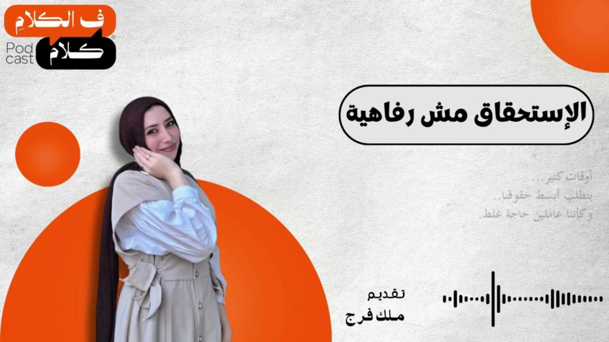

← الحلقات
عن الناس وعنك · الحلقة ٥

الإستحقاق مش رفاهية
٣ أغسطس ٢٠٢٦ · ٤:٣٤ · #حق #عن_الناس_وعنك
في الحلقة دي من "ف الكلامِ كلام"، بنتكلم عن الاستحقاق الحقيقي، وإزاي أوقات كتير بنربط الحب بإننا نطلب أقل، ونسكت أكتر، ونختفي شوية… لحد ما ننسى إن لينا حق نوجد براحتنا.
الاستحقاق مش غرور. ومش دلع. ومش طمع.
نص الحلقةاقرا النص
خليني أسألك سؤال بسيط. إمتى آخر مرة طلبت حاجة من غير ما تحط قبلها اعتذار؟
ليه أغلبنا وهو بيطلب أبسط حق، ليه بيتكلم وكأنه بيعتذر عن وجوده؟
يعني مثلًا تستنى صاحبك في الشارع ساعة كاملة ويتأخر عليك، وتيجي تكلمه، تبدأ كلامك بإيه؟ معلش لو مش مشغول يعني. لا، خد راحتك عادي. مع إن إنت اللي استنيت.
أو لما يكون عندك سؤال مهم في الشغل أو في الدراسة، بس تفضل ساكت وتقول أنا مش حابب أزعج حد. فتسكت لحد ما الموضوع يكبر فوق دماغك.
طيب إحنا ليه بنعمل كده؟ الإجابة أبسط مما تتخيل. إحنا في الغالب مش حاسين إننا نستاهل. مش حاسين إن لينا حق في الوقت والاهتمام والمساحة، وإن احتياجاتنا تبقى مهمة زي احتياجات غيرنا. وده غالبًا مش ذنبنا بالكامل. ده شيء اتعلمناه واحدة واحدة.
من وإحنا صغيرين، اللي طلب كتير اتقاله إنت متدلّع. واللي حط حدود اتقاله إنت صعب. واللي قال أنا مش مرتاح اتقاله إنت حساس أوي. فإيه اللي حصل؟ اتعلمنا نصغّر نفسنا، عشان الجو يبقى هادي، عشان محدش يزعل، عشان نبقى سهلين في التعامل.
بس اللي بيصغّر نفسه طول الوقت بيكبر في حاجة واحدة بس، ألا وهي التحمّل. وبيفضل يشيل ويعدّي ويسكت، لحد ما يتعب بطريقة مش مفهومة. وده مش دائمًا لطف. أوقات كتير ده exhaustion لابس شكل الهدوء.
خليني أقولك حاجة مهمة. الاستحقاق مش معناه إنك شايف نفسك أحسن من حد. ومش معناه إنك شخص demanding، أو إن العالم كله لازم يلف حواليك. الاستحقاق ببساطة إنك تبقى عارف إن ليك حق تاخد مساحتك من غير ما تدفع تمنها اعتذار. إنك تطلب من غير ما تحس إنك عبء. وترفض من غير ما تحس إنك شخص وحش. وتقول أنا تعبان من غير ما تستنى إذن من حد.
وخليني أقولك موقف بيتكرر أكتر مما تتخيل. صاحبك يحكيلك عن مشاكله بالساعات، وإنت تسمع وتدعم وتهوّن عليه، وده شيء جميل فعلًا. بس أول ما إنت تبدأ تتكلم، يمسك موبايله، أو يغيّر الموضوع، أو يرد بنص اهتمام. وساعتها تبلع إحساسك وتقول عادي، مش مهم. بس لا. مهم. إنت مهم. ومشاعرك مش حاجة ثانوية.
أو مثلًا في الشغل أو الجامعة، حد ياخد الـ credit على حاجة إنت تعبت فيها. وإنت تسكت، مش عشان مش متضايق، لكن عشان مش بحب المشاكل. بس بعدها تلاقي نفسك بتحكي عن الموقف لكل الناس، إلا الشخص نفسه. وده مش هدوء. ده unspoken resentment. مشاعر متراكمة اتدفنت بدل ما تتقال.
وفي ناس بتدخل أي علاقة وهي من البداية مقررة تصغّر نفسها. مش هطلب كتير، مش عايز أتعبه، مش عايزة أبقى تقيلة عليه. وكأن وجودهم نفسه لازم ييجي بنسخة أخف. وده غالبًا بيكون جاي من ناس قبل كده. ناس حسسوهم، بالكلام أو بالتصرفات، إن احتياجاتهم عبء.
بس الحقيقة، اللي بيحبك بجد مش بيتعب من احتياجاتك. هو بيتعب لما تخبيها. لأنه وقتها مش بيتعامل معاك إنت، بيتعامل مع نسخة إنت صنعتها عشان تناسبه. وفيه فرق كبير بين حد بيحبك، وحد بيحب إنك مبتطلبش منه حاجة.
you don't have to shrink yourself to be lovable. مش لازم تختفي شوية عشان الناس ترتاحلك، ومش لازم تبقى دايمًا سهل عشان تتحب.
وده مش معناه إنك تبقى أناني، أو إن كل حاجة تخصك أهم من أي حد. لكن معناه إن احتياجاتك مش عيب. ومشاعرك مش حمل. ووجودك مش شيء لازم تعتذر عنه طول الوقت.
المرة الجاية، لما تلاقي نفسك بتبرر قبل ما تطلب أي حاجة، قف ثانية واسأل نفسك: أنا ببرر فعلًا؟ ولا جوايا صوت بيقولي إن اللي أنا محتاجه مش مهم كفاية؟ ولو كان ده الصوت اللي بيتكلم، يبقى يمكن الوقت جه تفهم حاجة مهمة جدًا. يمكن طول عمرك كنت فاكر إن تقليل نفسك راحة للناس، لكنه كان أذى ليك إنت.
لأن الاستحقاق مش غرور. ومش دلع. ومش طمع. الاستحقاق إنك تعرف إن ليك حق توجد. بكل احتياجاتك، وبكل مشاعرك، وبكل ثقلك الحقيقي، من غير ما تحاول تصغّر نفسك عشان تبقى مريح للكل.
كانت معاكم ملك فرج، وأشوفكم في حلقة جديدة من ف الكلامِ كلام.